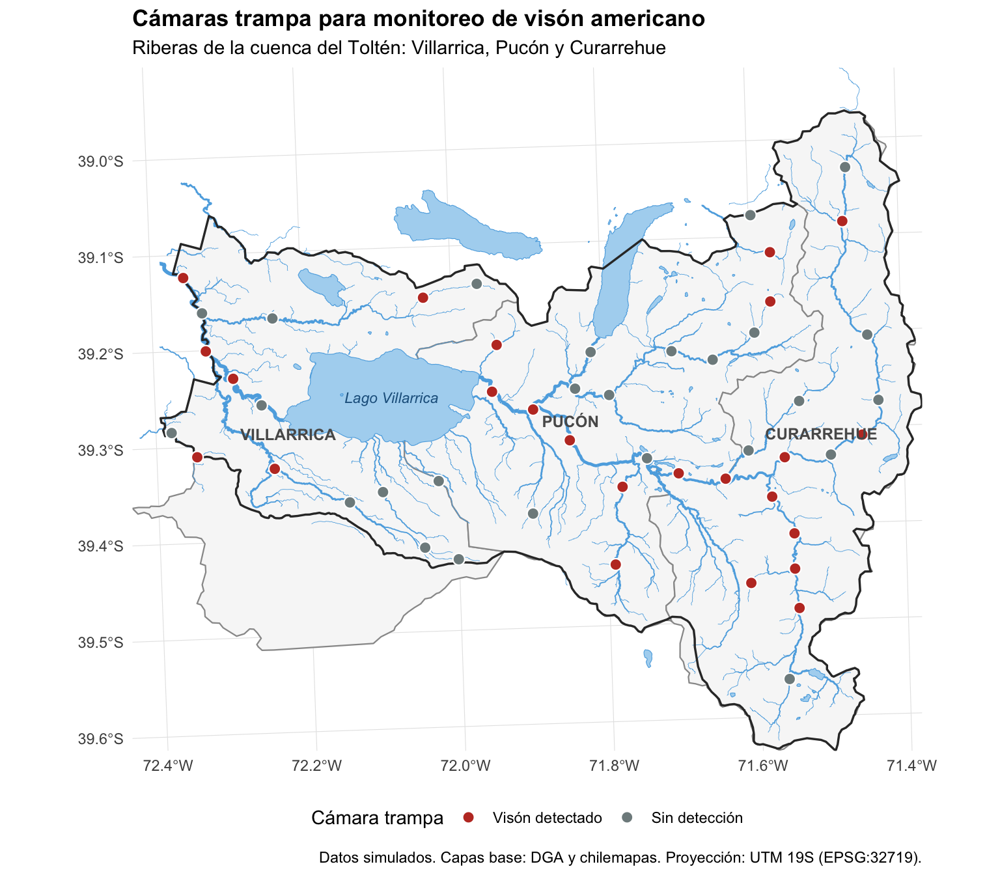

Código
library(tidyverse) # readr, dplyr, ggplot2
library(sf) # datos espaciales
ruta_tabla <- "../data/clean/vison_muestreo_limpio.csv"
ruta_gpkg <- "../data/clean/vison_espacial.gpkg"
crs_utm <- 32719Holis! Para esta exploración quise plotear los puntos gps de las cámaras trampa en un mapa. Recordar que los datos son simulados con ayuda de Claude.
library(tidyverse) # readr, dplyr, ggplot2
library(sf) # datos espaciales
ruta_tabla <- "../data/clean/vison_muestreo_limpio.csv"
ruta_gpkg <- "../data/clean/vison_espacial.gpkg"
crs_utm <- 32719vison <- read_csv(ruta_tabla, show_col_types = FALSE)
camaras_visitas <- vison |>
filter(metodo == "camara_trampa")camaras <- camaras_visitas |>
group_by(id_camara, id_sitio, comuna, rio, utm_este, utm_norte) |>
summarise(
visitas_con_dato = sum(!is.na(deteccion)),
n_detecciones = sum(deteccion, na.rm = TRUE),
dias_operativos = sum(dias_camara, na.rm = TRUE),
n_fallas = sum(estado_camara %in% c("falla_parcial", "falla_total")),
.groups = "drop"
) |>
mutate(
resultado = if_else(n_detecciones > 0, "Visón detectado", "Sin detección"),
resultado = factor(resultado, levels = c("Visón detectado", "Sin detección"))
)
camaras
count(camaras, comuna, resultado)camaras_sf <- camaras |>
st_as_sf(coords = c("utm_este", "utm_norte"), crs = crs_utm, remove = FALSE)
camaras_sfst_layers(ruta_gpkg)
area <- st_read(ruta_gpkg, layer = "area_estudio", quiet = TRUE)
comunas <- st_read(ruta_gpkg, layer = "comunas", quiet = TRUE)
lagos <- st_read(ruta_gpkg, layer = "lagos", quiet = TRUE)
rios <- st_read(ruta_gpkg, layer = "rios", quiet = TRUE) |>
filter(en_area) # solo los tramos dentro del área de estudioggplot() +
geom_sf(data = comunas) +
geom_sf(data = lagos, fill = "lightblue") +
geom_sf(data = rios, colour = "steelblue") +
geom_sf(data = camaras_sf, colour = "red")# Etiquetas: un punto dentro de cada polígono
etiq_comunas <- comunas |> st_point_on_surface()
etiq_lago <- lagos |>
filter(nombre_lago == "Lago Villarrica") |>
st_point_on_surface()colores_resultado <- c("Visón detectado" = "#C0392B", "Sin detección" = "#7F8C8D")
mapa_camaras <- ggplot() +
geom_sf(data = comunas, fill = "grey97", colour = "grey60", linewidth = 0.4) +
geom_sf(data = rios, aes(linewidth = strahler), colour = "#5DADE2",
show.legend = FALSE) +
scale_linewidth(range = c(0.15, 1)) +
geom_sf(data = lagos, fill = "#AED6F1", colour = "#5DADE2", linewidth = 0.2) +
geom_sf(data = area, fill = NA, colour = "grey20", linewidth = 0.6) +
geom_sf(data = camaras_sf, aes(fill = resultado),
shape = 21, size = 2.8, colour = "white", stroke = 0.6) +
scale_fill_manual(values = colores_resultado, name = "Cámara trampa") +
geom_sf_text(data = etiq_comunas, aes(label = toupper(comuna)),
size = 3.2, colour = "grey35", fontface = "bold") +
geom_sf_text(data = etiq_lago, aes(label = nombre_lago),
size = 3, colour = "#1F618D", fontface = "italic") +
coord_sf(crs = crs_utm, datum = 4326, expand = FALSE) +
labs(
title = "Cámaras trampa para monitoreo de visón americano",
subtitle = "Riberas de la cuenca del Toltén: Villarrica, Pucón y Curarrehue",
caption = "Datos simulados. Capas base: DGA y chilemapas. Proyección: UTM 19S (EPSG:32719).",
x = NULL, y = NULL
) +
theme_minimal(base_size = 11) +
theme(
legend.position = "bottom",
panel.grid = element_line(colour = "grey90", linewidth = 0.2),
plot.title = element_text(face = "bold")
)
mapa_camaras
camaras |>
arrange(comuna, id_camara) |>
select(Cámara = id_camara, Sitio = id_sitio, Comuna = comuna, Río = rio,
`UTM E` = utm_este, `UTM N` = utm_norte,
`Días operativos` = dias_operativos, Fallas = n_fallas,
Detecciones = n_detecciones, Resultado = resultado) |>
knitr::kable()| Cámara | Sitio | Comuna | Río | UTM E | UTM N | Días operativos | Fallas | Detecciones | Resultado |
|---|---|---|---|---|---|---|---|---|---|
| CT-31 | S31 | Curarrehue | Río Pucon o Minetue | 272523 | 5640962 | 91 | 0 | 1 | Visón detectado |
| CT-32 | S32 | Curarrehue | Río Pangui | 275166 | 5644221 | 91 | 0 | 0 | Sin detección |
| CT-34 | S34 | Curarrehue | Río Caren | 275485 | 5628921 | 91 | 0 | 3 | Visón detectado |
| CT-38 | S38 | Curarrehue | Río Trancura | 277896 | 5638889 | 88 | 0 | 3 | Visón detectado |
| CT-39 | S39 | Curarrehue | Río Maichin | 279347 | 5643445 | 83 | 1 | 2 | Visón detectado |
| CT-40 | S40 | Curarrehue | Río Trancura | 279915 | 5617826 | 91 | 0 | 0 | Sin detección |
| CT-41 | S41 | Curarrehue | Río Trancura | 280473 | 5634651 | 91 | 0 | 2 | Visón detectado |
| CT-42 | S42 | Curarrehue | Río Trancura | 280545 | 5630576 | 59 | 1 | 2 | Visón detectado |
| CT-43 | S43 | Curarrehue | Río Pangui | 281005 | 5649938 | 66 | 1 | 0 | Sin detección |
| CT-44 | S44 | Curarrehue | Río Trancura | 281060 | 5626028 | 72 | 1 | 1 | Visón detectado |
| CT-45 | S45 | Curarrehue | Río Maichin | 284681 | 5643747 | 92 | 0 | 0 | Sin detección |
| CT-46 | S46 | Curarrehue | Río Maichin | 285990 | 5670717 | 90 | 0 | 2 | Visón detectado |
| CT-47 | S47 | Curarrehue | Río Maichin | 286314 | 5676950 | 84 | 1 | 0 | Sin detección |
| CT-48 | S48 | Curarrehue | Río Maichin | 288298 | 5646056 | 88 | 0 | 2 | Visón detectado |
| CT-49 | S49 | Curarrehue | Río Maichin | 288872 | 5657603 | 61 | 1 | 0 | Sin detección |
| CT-50 | S50 | Curarrehue | Río Maichin | 290163 | 5650065 | 88 | 0 | 0 | Sin detección |
| CT-14 | S14 | Pucón | Estero Correntoso | 239380 | 5640687 | 89 | 0 | 0 | Sin detección |
| CT-17 | S17 | Pucón | Río Pucon o Minetue | 245541 | 5651004 | 77 | 1 | 1 | Visón detectado |
| CT-18 | S18 | Pucón | Río Quilque | 246069 | 5656409 | 59 | 1 | 1 | Visón detectado |
| CT-19 | S19 | Pucón | Río Correntoso | 250278 | 5636930 | 52 | 2 | 0 | Sin detección |
| CT-20 | S20 | Pucón | Río Pucon o Minetue | 250283 | 5648948 | 61 | 1 | 2 | Visón detectado |
| CT-21 | S21 | Pucón | Río Pucon o Minetue | 254521 | 5645398 | 90 | 0 | 1 | Visón detectado |
| CT-22 | S22 | Pucón | Río Liucura | 255128 | 5651356 | 89 | 0 | 0 | Sin detección |
| CT-23 | S23 | Pucón | Río Caburga | 256924 | 5655584 | 89 | 0 | 0 | Sin detección |
| CT-24 | S24 | Pucón | Río Liucura | 259066 | 5650629 | 90 | 0 | 0 | Sin detección |
| CT-25 | S25 | Pucón | Río Palgulil | 259828 | 5631045 | 90 | 0 | 1 | Visón detectado |
| CT-26 | S26 | Pucón | Río Palgulil | 260617 | 5640025 | 72 | 1 | 2 | Visón detectado |
| CT-27 | S27 | Pucón | Río Pucon o Minetue | 263437 | 5643324 | 83 | 1 | 0 | Sin detección |
| CT-28 | S28 | Pucón | Río Liucura | 266260 | 5655688 | 73 | 2 | 0 | Sin detección |
| CT-29 | S29 | Pucón | Río Pucon o Minetue | 267099 | 5641584 | 90 | 0 | 1 | Visón detectado |
| CT-30 | S30 | Pucón | Río Liucura | 271020 | 5654703 | 72 | 1 | 0 | Sin detección |
| CT-33 | S33 | Pucón | Río Quililehe | 275371 | 5671399 | 59 | 1 | 0 | Sin detección |
| CT-35 | S35 | Pucón | Río Liucura | 275834 | 5657833 | 90 | 0 | 0 | Sin detección |
| CT-36 | S36 | Pucón | Río Blanco | 277629 | 5667120 | 57 | 2 | 3 | Visón detectado |
| CT-37 | S37 | Pucón | Río Liucura | 277676 | 5661432 | 82 | 1 | 1 | Visón detectado |
| CT-01 | S01 | Villarrica | Río Huiscapi | 208537 | 5646233 | 89 | 0 | 0 | Sin detección |
| CT-02 | S02 | Villarrica | Río Tolten | 209865 | 5664137 | 89 | 0 | 3 | Visón detectado |
| CT-03 | S03 | Villarrica | Río Huiscapi | 211497 | 5643438 | 90 | 0 | 1 | Visón detectado |
| CT-04 | S04 | Villarrica | Río Tolten | 212043 | 5660057 | 92 | 0 | 0 | Sin detección |
| CT-05 | S05 | Villarrica | Río Tolten | 212479 | 5655662 | 90 | 0 | 3 | Visón detectado |
| CT-06 | S06 | Villarrica | Río Tolten | 215640 | 5652498 | 90 | 0 | 1 | Visón detectado |
| CT-07 | S07 | Villarrica | Río Tolten | 218922 | 5649428 | 80 | 1 | 0 | Sin detección |
| CT-08 | S08 | Villarrica | Río Pedregoso | 220171 | 5659466 | 91 | 0 | 0 | Sin detección |
| CT-09 | S09 | Villarrica | Río Voipir | 220450 | 5642099 | 91 | 0 | 1 | Visón detectado |
| CT-10 | S10 | Villarrica | Río Voipir | 229129 | 5638219 | 89 | 0 | 0 | Sin detección |
| CT-11 | S11 | Villarrica | Estero Huichato | 232947 | 5639413 | 90 | 0 | 0 | Sin detección |
| CT-12 | S12 | Villarrica | Río Pedregoso | 237567 | 5661863 | 91 | 0 | 1 | Visón detectado |
| CT-13 | S13 | Villarrica | Río Voipir | 237819 | 5632993 | 90 | 0 | 0 | Sin detección |
| CT-15 | S15 | Villarrica | Río Voipir | 241702 | 5631659 | 90 | 0 | 0 | Sin detección |
| CT-16 | S16 | Villarrica | Río Pedregoso | 243770 | 5663466 | 91 | 0 | 0 | Sin detección |
library(leaflet)
camaras_wgs <- st_transform(camaras_sf, 4326)
paleta <- colorFactor(unname(colores_resultado), levels = names(colores_resultado))
leaflet(camaras_wgs) |>
addProviderTiles(providers$Esri.WorldImagery, group = "Satélite") |>
addProviderTiles(providers$OpenStreetMap, group = "Calles") |>
addPolygons(data = st_transform(comunas, 4326), fill = FALSE,
color = "white", weight = 1.5) |>
addCircleMarkers(
radius = 6, stroke = TRUE, color = "white", weight = 1,
fillColor = ~paleta(resultado), fillOpacity = 0.9,
popup = ~paste0("<b>", id_camara, "</b> (", id_sitio, ")<br>",
rio, ", ", comuna, "<br>",
"Días operativos: ", dias_operativos, "<br>",
"Detecciones: ", n_detecciones)
) |>
addLegend(pal = paleta, values = ~resultado, title = "Cámara trampa") |>
addLayersControl(baseGroups = c("Satélite", "Calles"))Le pedí ayuda a claude para generar los códigos. Me ayudó a genera un mapa típico, donde se visualiza en cuáles cámaras se detectó visón vs las cámaras que no (Figura 1). Me aconsejó hacer un @mapa-interactivo y lo encontré demasiado bacán!
Similar al ejemplo visto en el taller de Riva, quise dejar la opción de visualizar el código, si el lector lo desea (format: html: code-fold: true). Además, si uno en el JAML del encabezado agrega la opción execute: output: false, se puede ocultar los resultados de los códigos, salvo si uno lo especifica en el chunk (output: true) como en el @mapa-interactivo, Tabla 1 y Figura 1). Poder llamar a las figuras lo encuentro muy bacán!
Se generó una Tabla 1 con la metadata que consideré importante de las cámaras trampa. Para este ejemplo, se detectaron 41 (<- agregado con código de r! con r sum(camaras$n_detecciones)